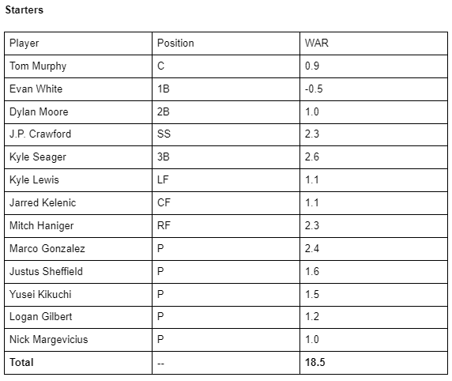
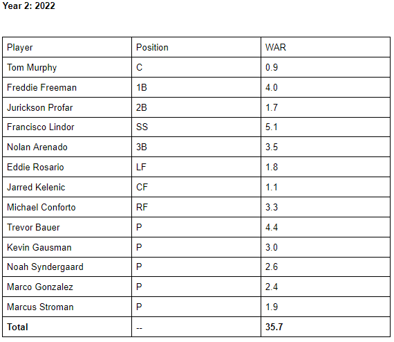
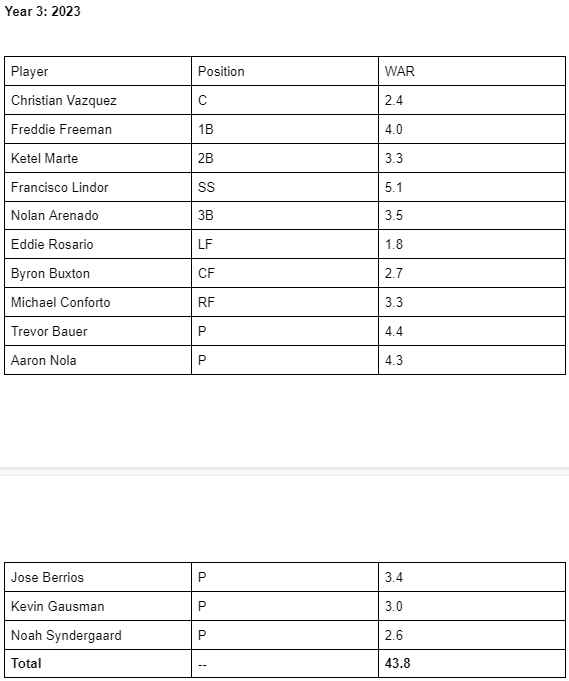
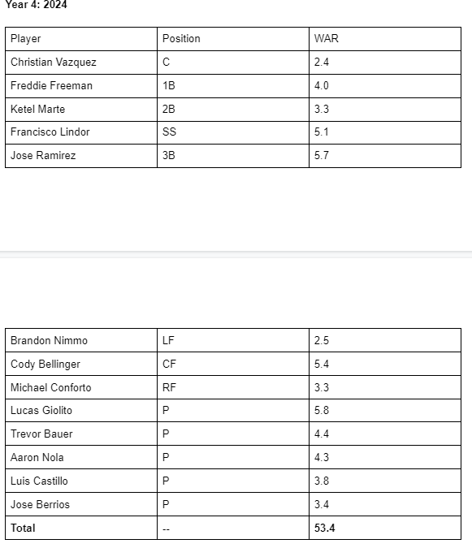

What if Jeff Bezos Bought the Mariners?
By Dominic de Bettencourt | May 16, 2021

As you've probably heard by now, Jeff Bezos has stepped down from his job as CEO of Amazon. With an estimated net worth of 180 billion dollars, Bezos has more money than most people would know what to do with - and I'm sure he's looking for ways to spend it. As the world's richest person, if he were to purchase a sports team, he would also be the league's richest owner. He could buy an NBA or NFL team - but in those leagues, he would be constrained to a salary cap of between $100 and $200 million per year, which wouldn't properly utilize Bezos's massive fortune. Instead, he should buy an MLB team, as the MLB has no salary cap and instead has a luxury tax. And what better team to buy than the Seattle Mariners, the perpetually underwhelming team near Amazon HQ who haven't made the playoffs since 2001?
Now, if Bezos bought the Mariners, he would likely want the team to start contending. After all, it's no fun watching a team win 60 games every season. So, in this scenario, we will assume Bezos puts as much money as necessary towards making the Mariners the best team possible - and this means that the Mariners would quickly set some new spending records. But how long would it take before the Mariners would make the playoffs again? And could they win a championship?
Year 1: 2021As the season has already begun, Bezos won't be able to make much of a difference to the current team. This means that the Mariners will probably accrue around 25 team WAR, and win around 72.6 games. A disappointing season, but a fairly expected one. Bezos's impact won't be felt until free agency.
(Note: For future seasons, we will calculate expected team WAR by looking at the starters' WAR and multiplying by 1.4. This might not be exactly accurate, but it's close enough for our purposes. Then, we will add 47.6 to calculate expected team wins.)
After another early end to the season, rumors abound in the offseason about what Bezos will do to turn around the team. His strategy? Sign every single reasonably young, top free agent by offering them deals so good they can't possibly refuse them. In the 2022 offseason, Bezos signs:
3B Nolan Arenado to a $1 billion, 10 year deal
SS Francisco Lindor to a $1.2 billion, 12 year deal
SP Marcus Stroman to a $900 million, 9 year deal
SP Kevin Gausman to a $900 million, 9 year deal
1B Freddie Freeman to a $800 million, 8 year deal
SP Noah Syndergaard to a $1.1 billion, 11 year deal
SP Trevor Bauer to a $900 million, 9 year deal
2B Jurickson Profar to a $1.1 billion, 11 year deal
RF Michael Conforto to a $1.1 billion, 11 year deal
LF Eddie Rosario to a $1 billion, 10 year deal
By doing this, he locks up every player through their age-40 season at $100 million per year, something they can't possibly refuse. The Mariners' lineup now looks like this:
Great! In just one season, the Mariners have gone from a disappointing 73 wins to an expected total of 97.6 wins, which is good enough for them to easily be in the playoffs and in the hunt for a World Series title. They might not be the favorites, but Bezos has brought them into very solid championship contention.
But the Mariners aren't yet dominant. At this point, they're certainly very good, but in comparison with what you might expect from a team spending over a billion dollars per year (and over $150 million in luxury tax), they're underachieving, and after the team loses in the ALCS to the Yankees, Bezos is facing a lot of criticism over his management of the team. So, he sets out again in free agency to do what he does best - sign free agents - and signs the following players.
C Christian Vasquez to a $800 million, 8 year deal
2B Ketel Marte to a $1.1 billion, 11 year deal
3B Jose Ramirez to a $1 billion, 10 year deal
SP Aaron Nola to a $1 billion, 10 year deal
SP Jose Berrios to a $1.1 billion, 11 year deal
CF Byron Buxton to a $1.1 billion, 11 year deal
After committing another $6 billion in contracts, the Mariners now look even better:
The starting lineup is now made up completely of free agents. The Mariners are also now definitely favorites to win the championship, at an expected win total of 108.9. The highest team WAR of all time was 68.1 by the 1927 Yankees - these Mariners are expected to get 61.3, which would place fifth all-time.
These Mariners cruise to the championship, but lose a tough matchup to the Dodgers in 7. Such is baseball. At this point, people are starting to call for Bezos to be fired as owner. He's committed $16 billion in contracts, the team is now paying $400 million in luxury tax alone, and they have no championships to show for it. So, yet again, he does what he knows how to do the best - spend money.
In the 2024 offseason, Bezos signs:
SP Lucas Giolito to a $1.1 billion, 11-year deal
CF Cody Bellinger to a $1.2 billion, 12-year deal
SP Luis Castillo to a $900 million, 9-year deal
LF Brandon Nimmo to a $900 million, 9-year deal
3B Jose Ramirez to a $900 million, 9-year deal
The Mariners are starting to run out of players to sign who are better than the players they already have. A good problem to have, generally. Here's what their team now looks like.
This team is clearly the best team in the history of baseball. At 74.8 projected WAR, they are expected to win 122.4 games, and no other team is within 20 projected wins of them. Nearly every player is better than the best player on the original Mariners team.
The Mariners rocket through the regular season, setting a new win record with 125. They easily get past the first round, then the ALCS, and then face off against the Dodgers again, where they... lose in 6. The public pressure for Bezos to quit finally gets to him, and he sells off the team. After committing over $20 billion worth of contracts, Bezos may have created the greatest team ever assembled - but even that might not be enough to break the Mariners' curse.
.gif)